NUMERICAL ANALYSIS
Artefacts from this module
This page documents all artefacts from the weekly data activities that were part of the Numerical Analysis module as one of the several pillars of learning offered by the module.
Activity
The Data Activities of this week consisted of:
- Installing and gettign started with R Studio (IDE for R).
- Downloading the Crime Survey for England and Wales, 2013-2014: Unrestricted Access Teaching Dataset and creating a summary statistic with R Studio using the antisocx variable.
Results
| Statistic | Value |
|---|---|
| Min | -1.215 |
| 1st Qu. | -0.788 |
| Median | -0.185 |
| Mean | -0.007 |
| 3rd Qu. | 0.528 |
| Max | 4.015 |
| NA's | 6694 |
Activity
The second week consisted of more statistical theory as well as some additional data activities using the Crime Survey for England and Wales, 2013-2014: Unrestricted Access Teaching Dataset:
- Exploring whether survey respondents experienced any crime in the 12 months prior to the survey using the variable bcsvictim.
- Creating a frequency table to count if survey respondents experienced any crime in the previous 12 months using the table() command.
- Assessing the results and deciding to convert this variable into a factor variable using as_factor.
Results
| Before Conversion (without factors) | After Conversion (with factors) |
|---|---|
table(csew1314teachingopen$bcsvictim)0 : 7460 1 : 1383 |
table(csew1314teachingopen$bcsvictim)Not a Victim of Crime: 7460 Victim of Crime: 1383 |
This analysis highlighted that 1,383 respondents were victims of crime within the 12 months prior to the survey. Converting the variable to a factor added interpretability and meaning to the results.
Activity
During week three we did some further exploration of the Crime Survey for England and Wales, 2013-2014: Unrestricted Access Teaching Dataset:
- Filtering the dataset using subset() to include only individuals aged 75+ and who were a victim of crime.
- Saving the filtered dataset as crime_75victim for further analysis.
- Counting the total number of individuals in the subset to document the sample size.
Results
Step 1: Inspecting the field agegrp7
To confirm the value representing respondents aged 75+, the labels for the agegrp7 field were checked using:
attributes(csew1314teachingopen$agegrp7)
The results showed that the value 7 corresponds to the age group "75+".
Step 2: Creating the Subset
A subset of individuals aged 75+ who were also victims of crime was created using the following command:
crime_75victim <- subset(csew1314teachingopen, agegrp7 == "7" & bcsvictim == "Victim of crime")
Step 3: Exporting the Subset
The subset was exported to a CSV file for further use with the command:
write.csv(crime_75victim, "crime_75victim.csv", row.names = FALSE)
Step 4: Verifying the Subset
To verify the results, the number of rows in the subset was counted using:
nrow(crime_75victim)
This confirmed that the subset contains 67 individuals.
Activity
This week included several online data activities:
- Doing online statistics exercises on Wolfram.com.
- Exploring everyday use of probabilities and exploring different types of sampling.
- Getting through discrete probability examples for Bionominal, poisson and hypergeometric simulation as well as going through examples for continous probability distribution looking at nominal, uniform, exponential and gaussian propability distributions.
- Doing some additional practice questions from Chapter 3 of the Holmes et al. (2017).
Activity
The data activities of week 5 aimed at introducing visaluzation:
- Creating a boxplot with boxplot and ggplot2 to assess levels of anti-social behaviour in neighbourhoods.
- Creating a barplot to show how how many samples fall into which category.
- Starting the first stastisics discussion in the course module.
Results
Step 1: Boxplot of Anti-Social Behaviour Levels
The first task was to create a boxplot for the variable antisocx, which assesses the level of anti-social behaviour that survey respondents experienced in their neighbourhood. Using the boxplot() function in R (with base graphics), the plot was created with the title "Levels of anti-social behaviour in neighbourhood 'antisocx'", and the boxplot was coloured purple with outliers in blue.
boxplot(csew1314teachingopen$antisocx,main = "Levels of anti-social behaviour in neighbourhood 'antisocx'",col = "purple",outcol = "blue")The boxplot() visualized the distribution of anti-social behaviour levels among respondents, with the outliers distinctly marked in blue.
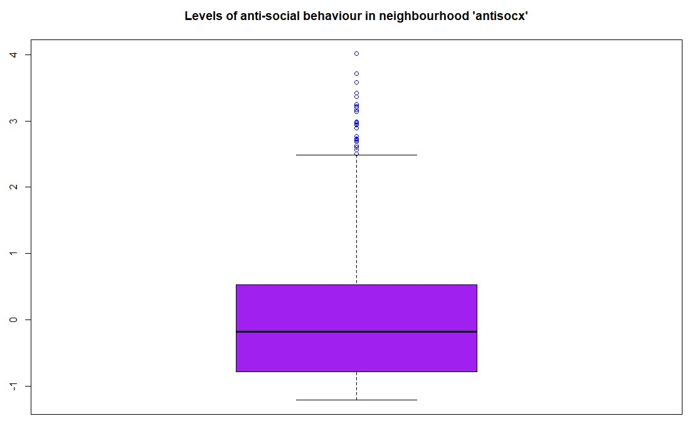Step 2: Boxplot of Anti-Social Behaviour Using ggplot2
As an alternative, a boxplot was also created using ggplot2 for a more aesthetic and customizable plot. This version featured yellow for the boxplot fill and red for the outliers.
ggplot(csew1314teachingopen, aes(x = "", y = antisocx)) + geom_boxplot(fill = "yellow", outlier.colour = "red") + labs(title = "Levels of anti-social behaviour in neighbourhood 'antisocx')") + theme_minimal() The ggplot2 version provided a visually appealing alternative, enhancing readability through custom colors and a minimalistic theme.
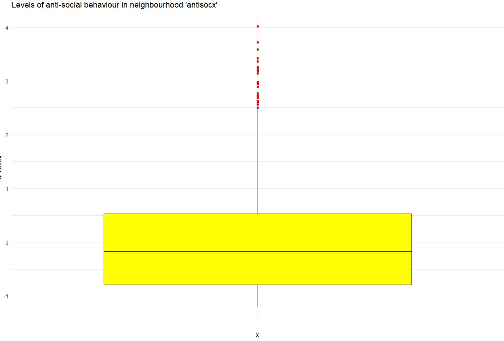Step 3: Bar Plot of Crime Victimization
The second task was to create a bar plot to assess whether survey respondents experienced crime in the 12 months prior to the survey using the bcsvictim variable. A frequency table was first created, and then a bar plot was generated using the barplot() function with orange bars, which visually displayed the number of respondents who were victims of crime versus those who were not.
barplot(crime_counts, main = "Survey Respondents - Victims of Crime", col = "orange", xlab = "Crime Experience", ylab = "Number of Respondents")This bar plot illustrated the distribution of crime victimization among the respondents, highlighting the number of individuals who experienced crime in the past 12 months:
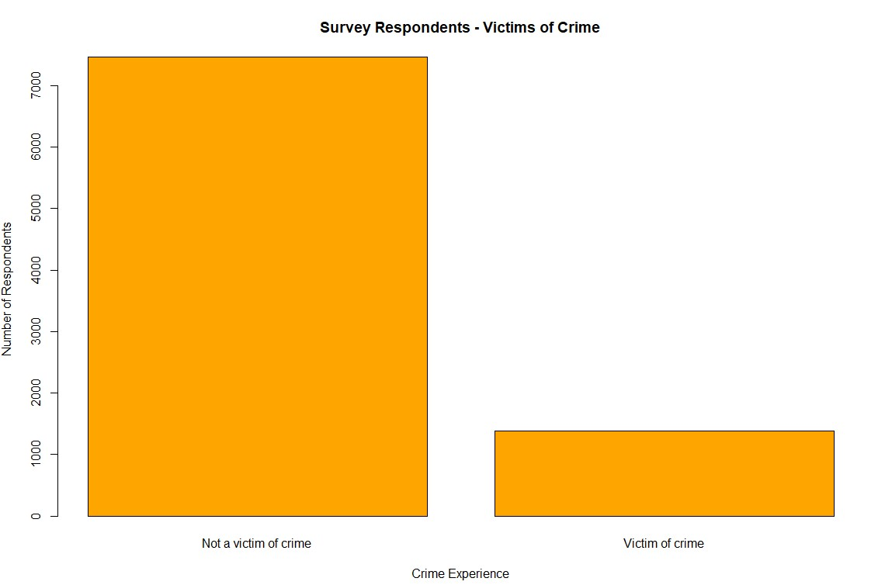First Group Discussion
The first group discussion was about streamlining data visualization by optimizing an existing table of a report.
- Challenges: The table was dense, mixing numbers and percentages, with discrepancies in respondent counts (490–547).
- Actions Taken: Separated data into clearer columns, added total respondents, and used ChatGPT to generate Python code for visualization.
- Outcome: A cleaner table and a dynamic visualization using matplotlib.
Activity
During week 6 there was only one data activity:
- Continuing and contributing to an ongoing stastics discussion on the modules course page/moodle that started in week 5 and will end in week 7.
Activity
Week 7 consisted of several data activites based on a health information dataset:
- Find out mean, median and mode of variables sbp, dbp and income.
- Find out the five-figure summary of income variable and present it using a Boxplot.
- Run a suitable hypothesis test to see if there is any association between systolic blood pressure and presence and absence of peptic ulcer.
- Final summary of discussion with other students.
Results
Step 1: getting mean, median and modestrong
To get the median and mode of each of those variable we can use the following commands in R:
The means for each:mean_sbp <- mean(Health_Data$sbp, na.rm = TRUE)mean_dbp <- mean(Health_Data$dbp, na.rm = TRUE)mean_income <- mean(Health_Data$income, na.rm = TRUE)The median for each:
median_sbp <- median(Health_Data$sbp, na.rm = TRUE)median_dbp <- median(Health_Data$dbp, na.rm = TRUE)median_income <- median(Health_Data$income, na.rm = TRUE)The mode for each:
mode_sbp <- getmode(Health_Data$sbp)mode_dbp <- getmode(Health_Data$dbp)mode_income <- getmode(Health_Data$income)Step 2: Create a boxplot for the income variable
To create a boxplot for the variable income we can use the boxplot command:
boxplot(Health_Data$income, main = "Boxplot of Income", ylab = "Income", col = "lightblue")
This results in a boxplot that shows the income distribution:
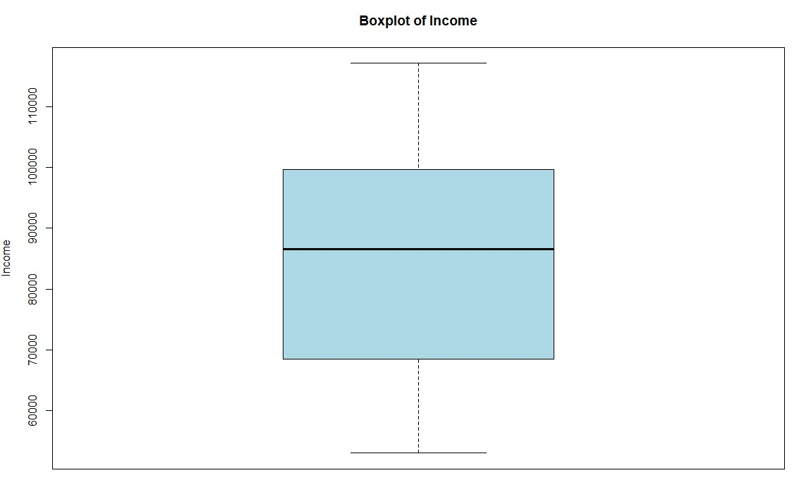Step 3: Run a hypothesis test to see if there is any association between systolic blood pressure and presence and absence of peptic ulcer.
To compare the means of two groups and check if there is any statistically relevant correlation we can use the T-Test:
t_test_result <- t.test(sbp ~ pepticulcer, data = Health_Data)
This results can be shown by simply typing t_test_result. They indicate that there is no significant evidence for the hypothesis that peptic ulcer is associated with systolic blood pressure:
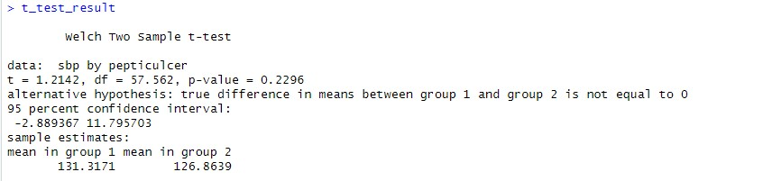Activities
Following data activities were part of week 8:
- Find out the mean, median and mode of age variable.
- Find out whether median diastolic blood pressure is same among diabetic and non-diabetic participants.
- Find out whether systolic BP is different across occupational groups.
- Additional: Scenario-Based Exercise 95% Confidence Interval.
Results
Step 1: Get statistical information about a variable
The mode, mean and median:mean_age <- mean(Health_Data$age, na.rm = TRUE)median_age <- median(Health_Data$age, na.rm = TRUE)mode_age <- as.numeric(names(sort(table(Health_Data$age), decreasing = TRUE))[1])As a result the following values have been found:
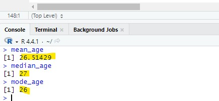Step 2: Diastolic blood pressure check
The second step was to 1. split the data into diabetic and non-diabetic while 2. also taking the dbp value for each. This can then be used to perfom a Mann-Withney U test to compare the median dbp between the diabetic and non-diabetic entries.
Split into a diabetic and non-diabetic list while keeping the dbp for each:diabetic_group <- Health_Data$dbp[Health_Data$diabetes == 1]non_diabetic_group <- Health_Data$dbp[Health_Data$diabetes == 2]Performing the Mann-Withney U test:
result <- wilcox.test(diabetic_group, non_diabetic_group, exact = FALSE)
Result was a p value of 0.7999 which means that the hypothesis was strongly rejected being much greater than the 0.05 treshhold usually taken to validate.
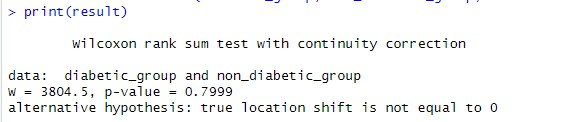Step 3: Systolic BP check
The third step was to check the systolic BP for being different across occupationl groups.
First we run a shapiro test to understand the normality for each occupation group:shapiro_results <- by(Health_Data$sbp, Health_Data$occupation, shapiro.test)The p-values for all 4 occupational groups was below 0.05 which means we can reject the null hypothesis indicating that the data is not normally distributed. We will use the Kruskal-Wallis test to check the data as it does not require normality. The result should tell us wherte there is a significant differenct in systolic blood pressure across the occupational groups:
kruskal_result <- kruskal.test(sbp ~ occupation, data = Health_Data)The kruskal test resulted in a p value of 0.8545 which means we can reject the null hypothesis and the occupations do not have a significant difference in blood pressure distribution. The following image shows how the systolic blood pressure is distributed among the four occupation categories:
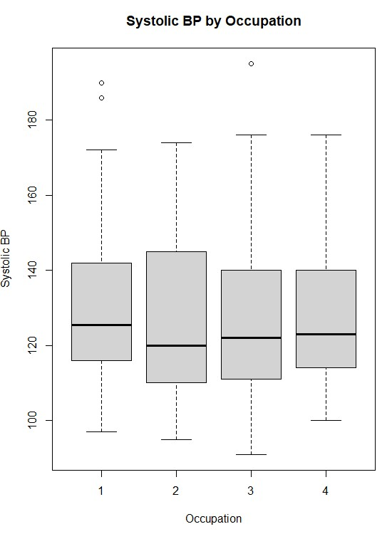Step 4: Getting through the scenario based solution
We will import the data to R where there will be an aray for each of the three vendors:
vendor1 <- c(45, 29, 56, 52, 45, 45, 41)vendor2 <- c(61, 53, 41, 58, 53, 47, 44)vendor3 <- c(35, 21, 33, 27, 22, 26, 30)We will now take the mean of each vendor to understand which has the highest mean:
mean_vendor1 <- mean(vendor1)mean_vendor2 <- mean(vendor2)mean_vendor3 <- mean(vendor3)As a result vendor 2 has the highest mean which could indicate this as the best vendor for the training.
Activities
Week 9 data activites got back into analyzing the Crime Survey for England and Wales, 2013-2014: Unrestricted Access Teaching Dataset:
- Create a crosstab to assess how individuals’ experience of any crime in the previous 12 months bcsvictim vary by age group agegrp7. Create the crosstab with bcsvictim in the rows and agegrp7 in the columns, and produce row percentages, rounded to 2 decimal places.
- Looking at the crosstab you have produced, which age groups were the most likely, and least likely, to be victims of crime?
Results
Step 1: Creating Cross Table
The first step was to create a crosstab using the table function. We will also round it to two decimals in this step:
raw_crosstab <- table(csew1314teachingopen$bcsvictim, csew1314teachingopen$agegrp7)row_percentages <- prop.table(raw_crosstab, margin = 1) * 100row_percentages <- round(row_percentages, 2)Result shows the percentage of people that have been victim and not grouped into their age group. The most likely group to be victim of crime is the age group 2 and the least likely age group 1:
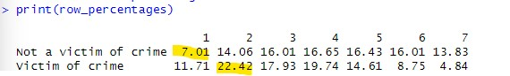
Activities
The following data activities were conducted during week 10:
- Find out correlation between systolic and diastolic BP.
- Produce a scatter plot between systolic and diastolic BP.
Results
Step 1: Finding the correlation between systolic and diastolic blood pressure
The first step was to get the correlation between the two variables which can be done with the following code in R:
correlation <- cor(Health_Data$sbp, Health_Data$dbp, use = "complete.obs")The result was 0.846808 which indiactes a strong positive correlation of around 84.7%
Step 2: Creating a Scatter Plot
To create a scatter plot the plot function of R can be used:
plot(Health_Data$sbp, Health_Data$dbp,main = "Scatter Plot of Systolic vs Diastolic Blood Pressure",xlab = "Systolic Blood Pressure (SBP)",ylab = "Diastolic Blood Pressure (DBP)",pch = 19, col = "blue")This is the plot created:
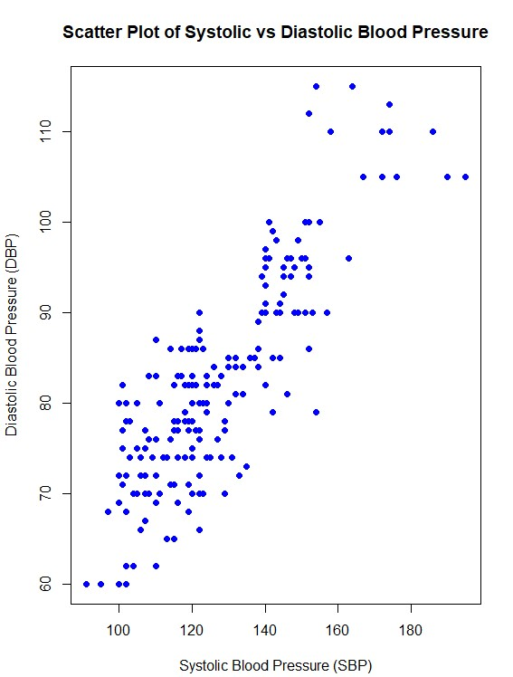Activities
The data activities during this week focused on working with regression:
- Perform simple linear regression analysis to find the population regression equation to predict the diastolic BP by systolic BP.
- Interpret the findings of regression analysis at 5% level of significance.
Results
Step 1: Fit the linear regression model
We use the lm() function in R to fit the model:
model <- lm(dbp ~ sbp, data = Health_Data)The linear regression model to predict diastolic blood pressure (DBP) based on systolic blood pressure (SBP) is DBP=19.41+0.496⋅SBP. The following can be interpreted from the results:
- 19.41 is the intercept: The predicted diastolic blood pressure when systolic blood pressure is 0 (not practically meaningful but part of the equation).
- 0.496is the slope: For every unit increase in SBP, DBP is expected to increase by 0.496 units on average.
- The p value is smaller than 0.05 this means the relationship between sbp and dbp is highly statistically significant at the 5% level of significance.
- The multiple R square of 0.7171 indicates that 71.71% of the variability in dbp is explained by sbp.
- The adjusted R square of 0.7157 is very close to the multiple R square which indicates that the model is well fit.
- The residual standard error (RSE) is 6.264 which represents the typical deviation of observed DBP values from the predicted values.
The regression analysis shows a strong and statistically significant positive relationship between SBP and DBP:
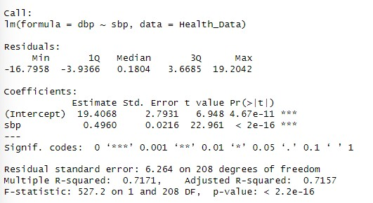Activities
Week 12 only included the following data activites:
- The activity focuses on Baye’s Probability and was a moodle based activity that included calculation of various statistical values.